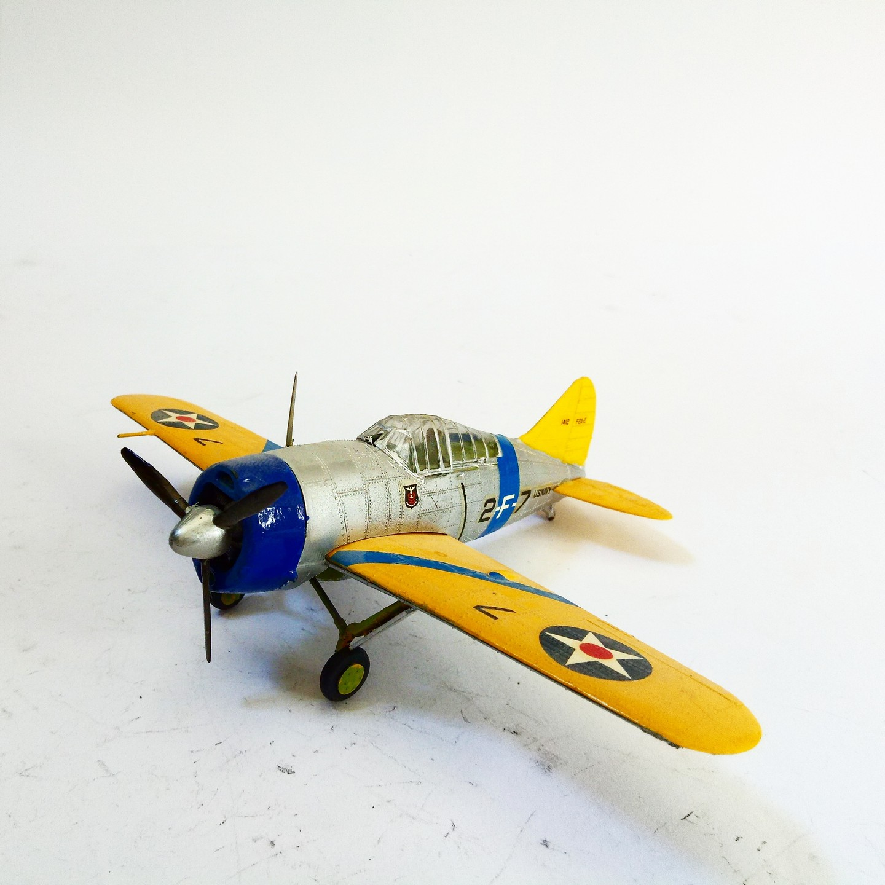
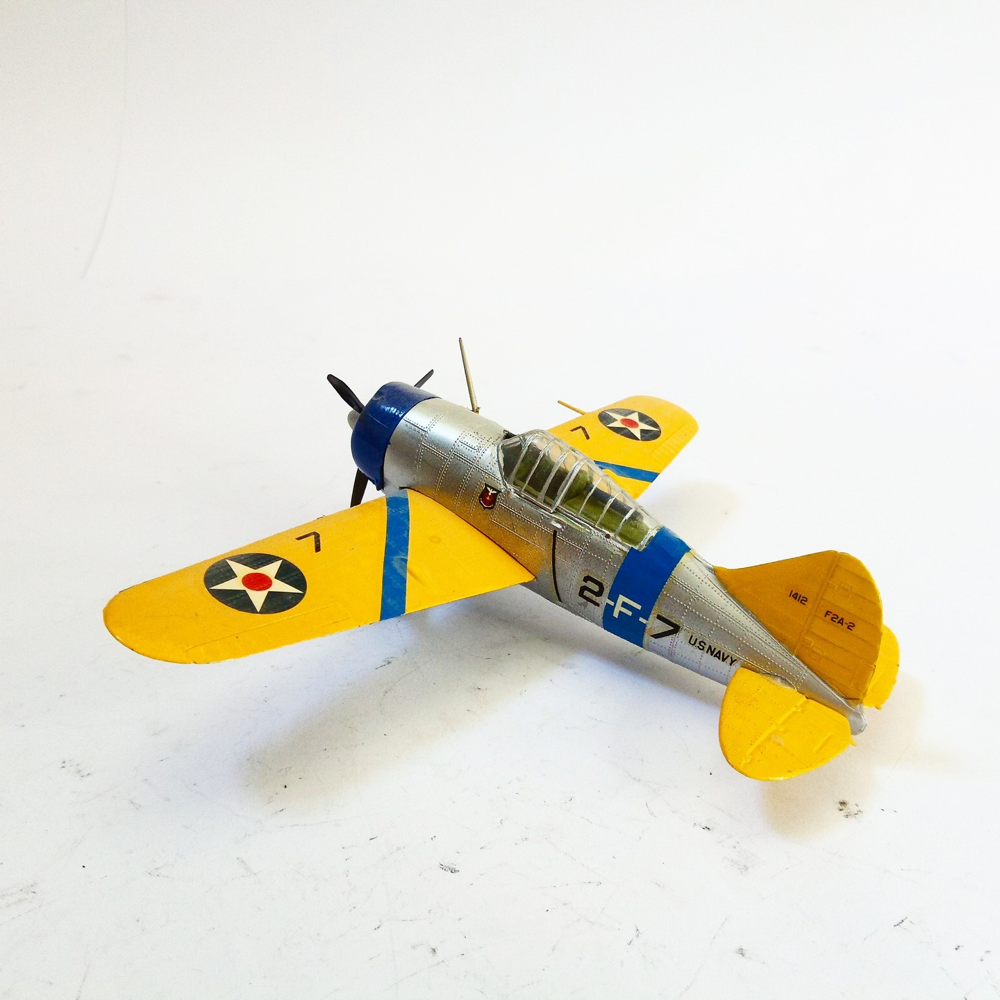

Aerei · scale model archive
Brewster F2A Buffalo
Brewster F2A Buffalo — Kit: Revell, Scale: 1/72. I like a lot the colouful US pre-war livery #1/72 #Revell

Photo gallery

English description
I like a lot the colouful US pre-war livery
#1/72 #Revell
Descrizione italiana
Livrea I like una lot il colouful US pre-war.